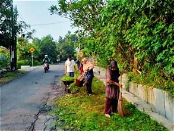
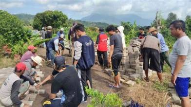
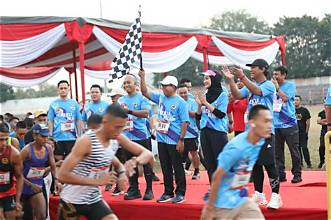
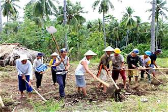

Media informasi digital untuk mengenal profil, potensi wilayah, kegiatan, dan kehidupan masyarakat Padukuhan Dungsuru.
Jelajahi ProfilMengenal lebih dekat wilayah Padukuhan Dungsuru.

Padukuhan Dungsuru merupakan wilayah yang memiliki kehidupan masyarakat, budaya, serta potensi lokal yang perlu dikenal dan dikembangkan.
Website ini dibuat sebagai media informasi digital untuk memperkenalkan profil wilayah dan membantu penyebaran informasi kepada masyarakat.
Catatan: Lengkapi deskripsi ini berdasarkan informasi resmi dari pengurus padukuhan.
Pengurus Padukuhan Dungsuru.
Nama Kepala Dukuh Dungsuru
Gambaran umum data penduduk Padukuhan Dungsuru.
Total Penduduk
Total Kepala Keluarga
Total RT
Angka di atas merupakan data contoh. Ganti dengan statistik resmi yang telah disetujui pengurus.
Mengenal produk dan usaha masyarakat setempat.
Deskripsi singkat produk atau usaha warga.
Dokumentasi aktivitas masyarakat Padukuhan Dungsuru.



Informasi dan komunikasi dengan pengurus padukuhan.
Nama: Padukuhan Dungsuru
Alamat: Lengkapi alamat resmi padukuhan
WhatsApp: Kontak pengurus (jika tersedia)